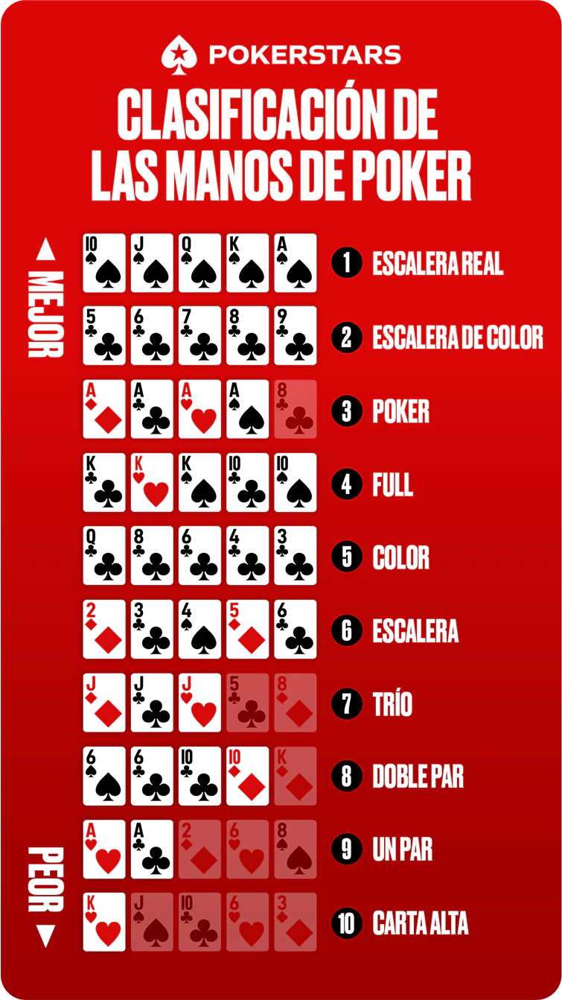

¿Bonus?
¡Sí, imaginatelo!
Juegos de Azar de Doble Porción & Las jerarquías en Poker


Álbum - Juegos de Azar de Doble Porción
El álbum Juegos de Azar de Doble Porción es una obra que refleja la vida, las decisiones y las consecuencias del entorno urbano de Medellín. A través de sus letras, el dúo combina reflexiones personales, vivencias del barrio y metáforas sobre el destino y la suerte, usando el concepto del azar como hilo conductor. Con un sonido melancólico y lírico, el disco mezcla rap clásico con toques de jazz y soul, transmitiendo una atmósfera introspectiva y poética.